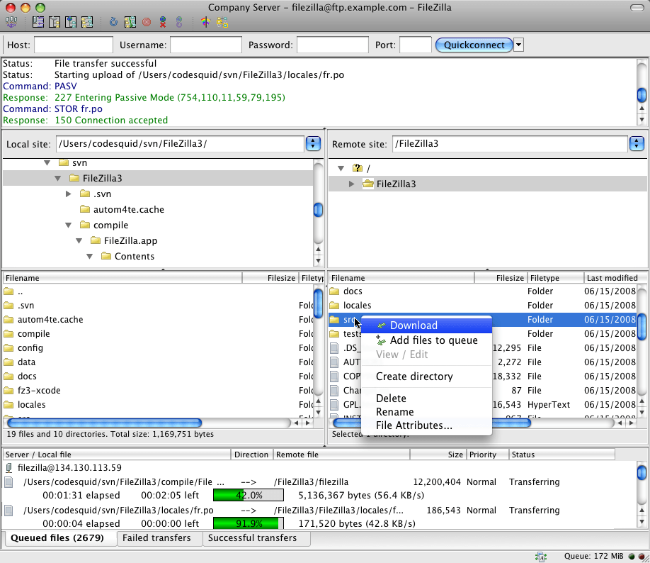
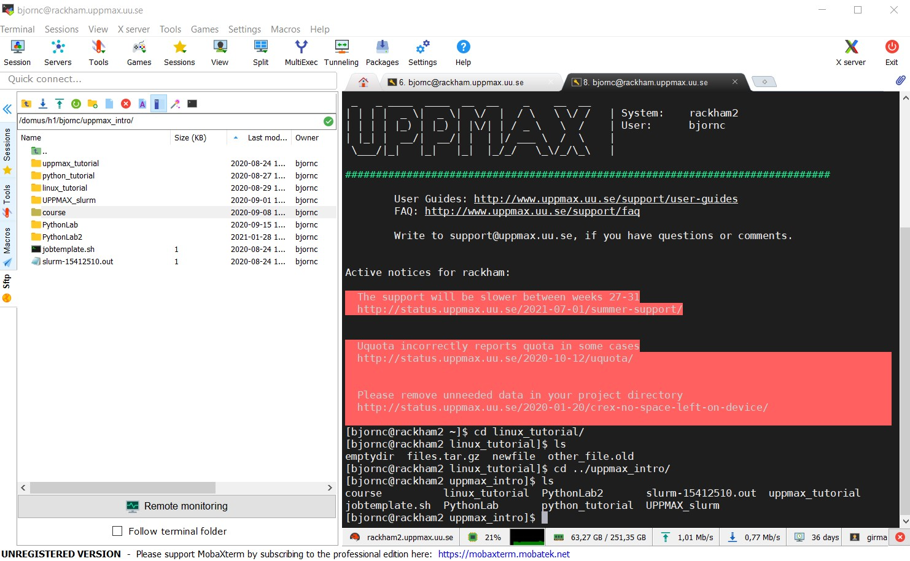
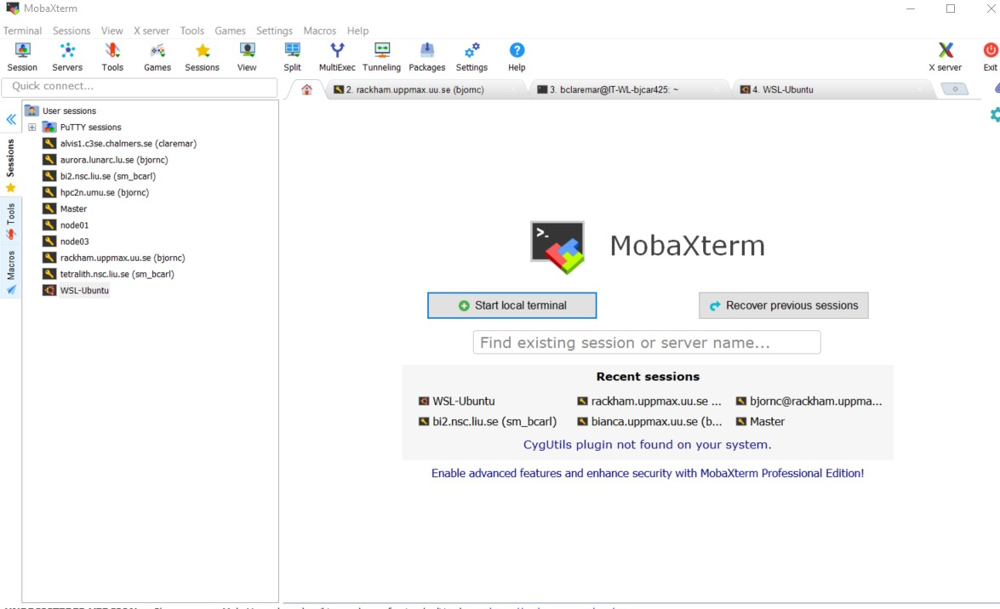

Login
MAC and LINUX users
Download XQuartz or other X11 server for Mac OS
This is to enable graphics.
Start built-in Terminal.
$ ssh -Y <username>@rackham.uppmax.uu.se
“< >” prompts you to set the keyword specific for you or your needs. In the example above, this is basically your username.

For copying of files between your client computer (where you are) and the cluster Filezilla can be the choice. https://filezilla-project.org/download.php?type=client (Links to an external site.)

If problem with installations, the built-in terminal is sufficient first days of the course!
Windows users
Download and install ONE of the X-servers below (to enable graphics)
GWSL https://sourceforge.net/projects/vcxsrv/ (Links to an external site.)
X-ming https://opticos.github.io/gwsl (Links to an external site.)z
VcXsrv https://sourceforge.net/projects/xming/ (Links to an external site.)
not necessary:
Install WSL (Windows Subsystem for Linux)
https://docs.microsoft.com/en-us/windows/wsl/install-win10 (Links to an external site.)
Don’t forget to update to wsl2
Install a distribution or a ssh (secure shell) program
Distribution such as ubuntu or
(recommended) a ssh program such as MobaXTerm
https://mobaxterm.mobatek.net/ (Links to an external site.)
sftp frame makes it easy to move, upload and download files.
You may want to check this webpage as well!
https://hackmd.io/@pmitev/Linux4WinUsers (Links to an external site.)
MobaXterm

Start local terminal and a SSH session by:
$ ssh -X username@rackham.uppmax.uu.se

Or even better, create and save a SSH session, as shown in image below.
This allows you to use MobaXterm as a file manager and to use the built-in graphical texteditor.
You can rename the session in the Bookmark settings tab.

If problem with installations, the putty.exe terminal is sufficient first days of the course!
No graphics.
https://www.putty.org/ (Links to an external site.)

X11-forwarding from the command line
Graphics can be sent through the SSH connection you’re using to connect
Use primarily ssh -Y <…> or secondary ssh -X <…>
The X servers that enables graphics are needed, as mentioned above!
When starting a graphical program, a new window will open, but your terminal will be “locked”.
Run using “&” at the end to run it as a background process e.g. “xeyes &” or “gedit &”

Alternatively, use ctrl-z to put e.g. gedit to sleep and type “bg” to make last process in background.
ThinLinc (all platforms!)
Both Rackham and Bianca offer graphical login.
This gives you a desktop environment, as if you were working on your own computer!
On web:
https://rackham-gui.uppmax.uu.se (Links to an external site.)
https://bianca.uppmax.uu.se (Links to an external site.) -requires 2-factor authentication

Or use the client (only for Rackham)
https://www.cendio.com/thinlinc/download (Links to an external site.)
Try the web version now if you don’t already have the software installed!